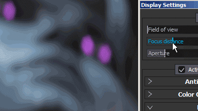
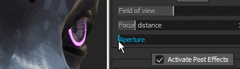
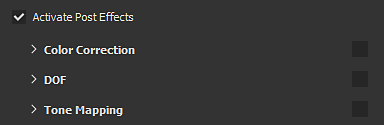
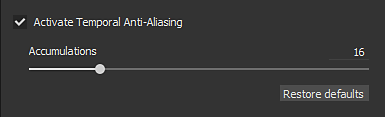
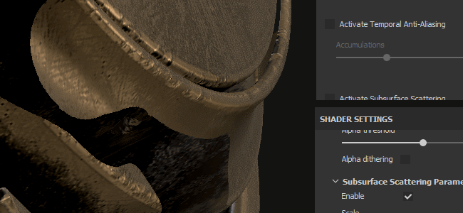
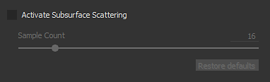
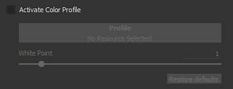
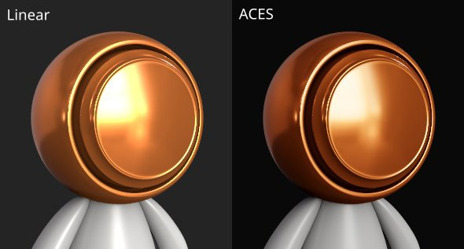

Setting
Camera settings
This section of the Display Settings controls the behavior of the camera as well as the final look of the viewport.
Camera
|
|
Description |
|---|---|
|
Field of View |
Allows to control the Filed of View of the camera (in degrees) |
|
Focus Distance |
Defines the distance at which the focus point is located. 
Note
The Focus Distance can be set automatically by clicking on a point of the mesh with the shortcut CTRL + Middle Mouse Button |
|
Aperture |
Defines how wide the Depth of Field will be. 
Note
If Iray is controlling this parameter, changing it will re-trigger a computation. |
Post effects

See the Post-Effect page for more information.
Temporal anti-aliasing

When enabled the Temporal Anti-Aliasing (TAA) will remove jagged edges in the viewport.
TAA works by accumulating information across multiple frames of rendering, this means the effect is disabled until the camera stops moving or other operation are performed.
|
Setting |
Description |
|---|---|
|
Accumulations |
Defines how many frames will be accumulated to reduce the aliasing.
Note
This setting doesn't have any impact on performance; however, a high value may take longer to produce good results. |

The Anti-Aliasing can also be used to filter the Alpha-Test shader if the setting "Alpha Dithering" is enabled:

Subsurface scattering

See the Subsurface Scattering page for more information.
Color profile

See the Color Profile page for more information.
Tone mapping
|
Setting |
Description |
|---|---|
|
Function |
Specify the function used to fit color values exceeding the monitor display capabilities (remapping of HDR values to a LDR range). Possible values are:

Note
Some Game Engines and Rendering software use the ACES tone mapper. Enabling this function will help matching colors between applications and avoid differences. |